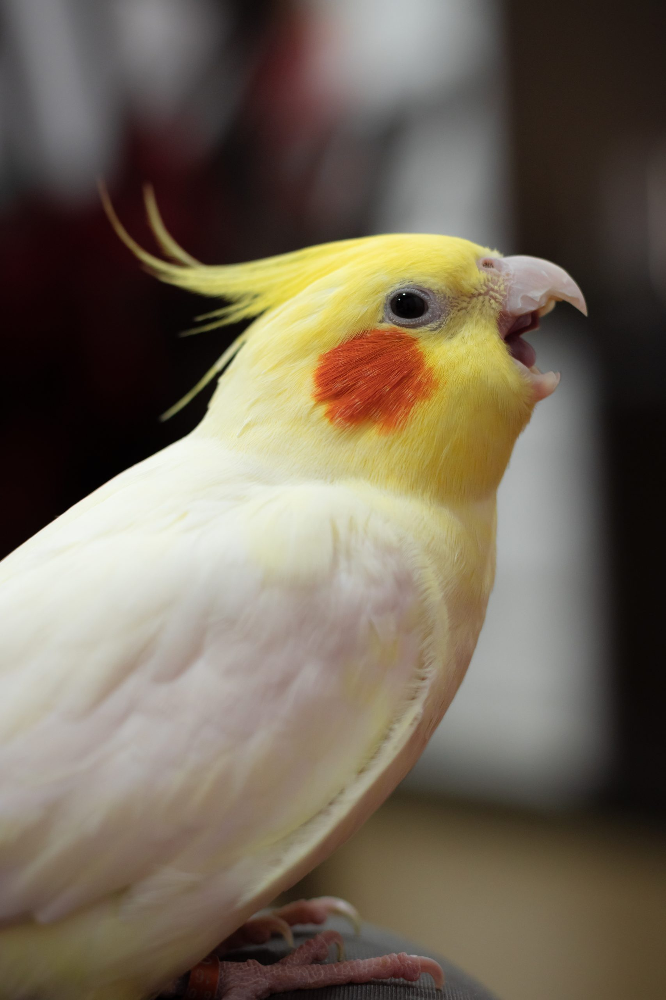
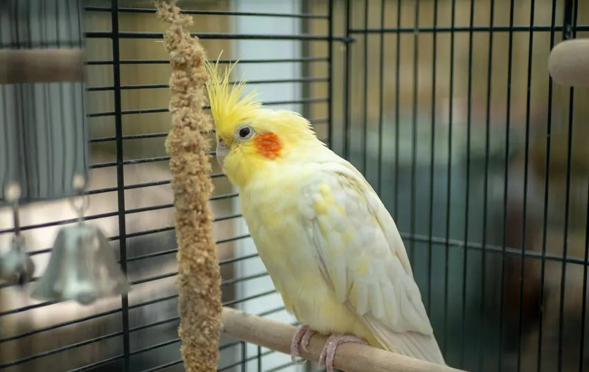
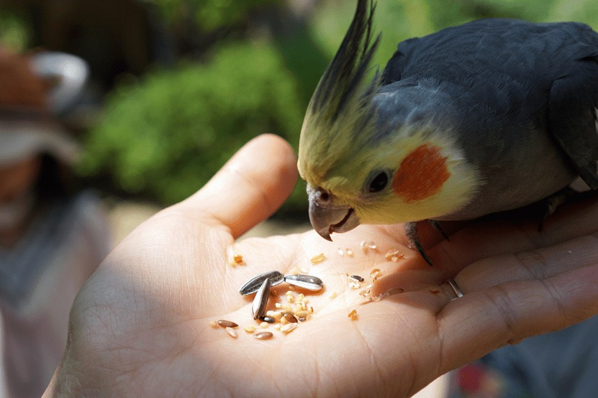

Pochodzenie
Australia – suche i półsuche tereny
Długość
30–33 cm
Długość życia
10–20 lat
Tryb życia
Dzienny, stadny
Cechy szczególne
Charakterystyczny czubek na głowie i spokojny charakter
Łagodna papuga – idealna dla początkujących hodowców

Australia – suche i półsuche tereny
30–33 cm
10–20 lat
Dzienny, stadny
Charakterystyczny czubek na głowie i spokojny charakter
Nimfa posiada smukłą sylwetkę, długi ogon oraz charakterystyczny czubek, który zmienia pozycję w zależności od nastroju. Najczęściej spotykane są odmiany szare, żółte (lutino) i białe.

18–28°C (bardzo odporna papuga)
Umiarkowana – lubi latać i bawić się
Raczej cicha w porównaniu do innych papug
Może żyć samotnie, ale lubi kontakt z człowiekiem

Nimfy są spokojne, przyjazne i łatwe w oswojeniu. Często naśladują dźwięki, potrafią gwizdać melodie i szybko przywiązują się do opiekuna.
Wymaga regularnej uwagi, ale jest mniej wymagająca niż większe papugi